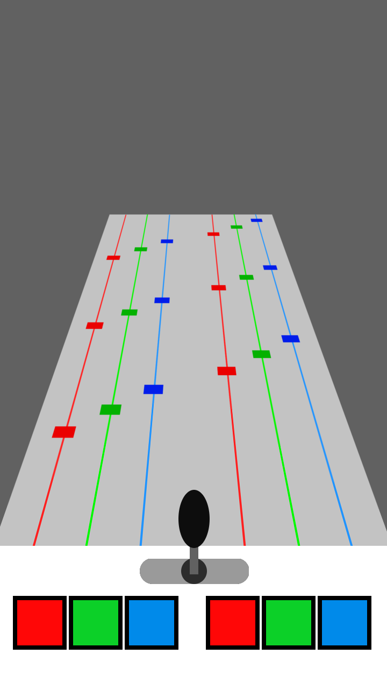
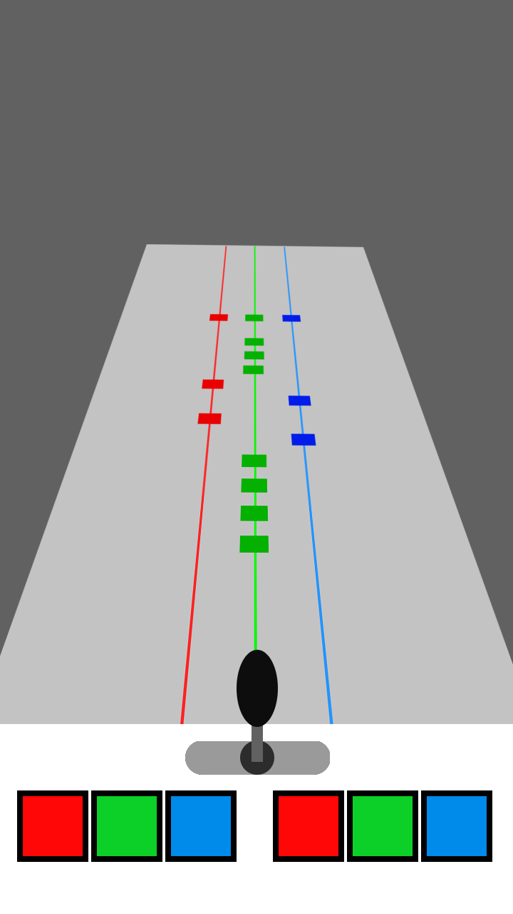
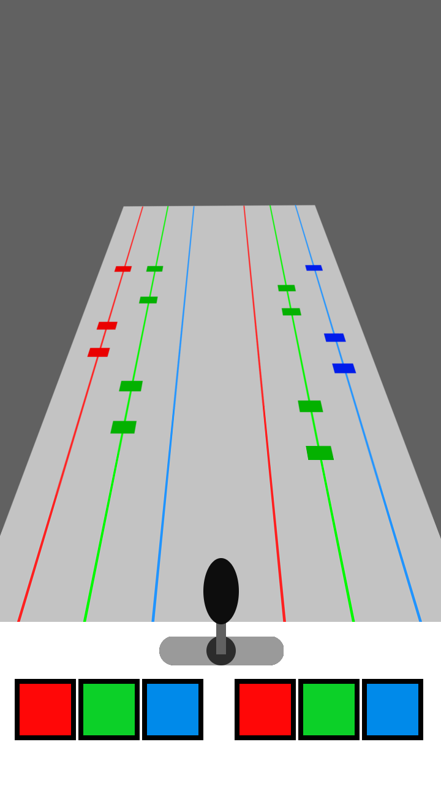

この記事はSofme AdventCalendar 2019 24日目の記事です。
皆さんお久しぶりです。2回生の鉄鉱石です。普段は副部長としてゲーセンで音ゲーしたり、プログラム班長としてスマホで音ゲーしたりしています。
1本目の記事で真面目っぽいことを書いたので今回は布教をするオタクになります。よろしくお願いします。
この記事では、私一押しの音楽ゲーム「オンゲキ」の布教をしたいと思います。
音楽ゲームに興味がある人、他の音楽ゲームはやってるけどオンゲキは触ったことがない……って人はぜひ読んでみてください。
オンゲキは、ゲームセンターで稼働しているアーケード音楽ゲームです。
2018年夏稼働と、アーケード音楽ゲームの中ではかなり新しいタイトルになっています。
基本的なことについてはここを見ていただければだいたいわかると思います(丸投げ)。
今回は、オンゲキの特徴のなかでも特に大きなものを2つ挙げたいと思います。
まず第1に、「独特な操作デバイス」。
音ゲーといえば「タイミングに合わせてボタンを押す」スタイルが普通ですが、オンゲキでは通常のボタンに加えてレバーを使います。
レバーを左右に倒すと画面上の自キャラが左右に動き、アイテムを取ったり、敵の弾を避けたりすることができます。STGみたいですね。
また、レバーをタイミングよく左右に入力してノート(音符)を取ることもあります。この操作がなかなか楽しいです。
さらにボタン配置も独特。なんとオンゲキは左右の壁にボタンがあるんです。
普通のボタンと同じようにタイミングに合わせて壁のボタン(以下「SIDEボタン」)を叩く(通称「壁ドン」、でも強く壁ドンするとボタンが壊れる可能性がある上に痛いのでやめましょう)のですが、これがまた楽しい。
スマホ音ゲーが増えてきて音ゲーがいつでもどこでも遊べるこの時代において、独特なデバイスが生み出す「操作そのものの面白さ」をぜひ皆さんにも体験してほしいです！(ダイマ)
そして第2に「充実のキャラクターコンテンツ」。
オンゲキには数々のオリジナルキャラクター、そしてそのキャラクターたちが登場するストーリーが存在します。
公式サイトのキャラクター一覧です。かわいいですね。
ちなみに私は⊿TRiEDGEの3人が好きです(オタク)。
オンゲキではこのオリジナルキャラクター達やコラボイベントでのキャラクターがカードになっており、そのカードをセットする事で自分の操作できるキャラを変えることができます。
操作キャラを変える事で、ゲームを有利に進めてゲーム内通貨を多く手に入れたり、好きなキャラの親愛度を上げてセリフやアイテムなどを獲得したりすることができます。
このカードはイベント報酬やゲーム内通貨であるジュエルを消費することで入手できるほか、さまざまなボーナスで手に入る「無料ガチャ券」を消費、あるいはクレジットを消費してガチャを回すことでも入手できます。
ぜひ自分の推しキャラを見つけて、カードを集めて見てください！(闇へのいざない)
さて、ここまでの要素をまとめると、オンゲキは「音ゲー×STG×女の子×ストーリー×TCG×ガチャ」になります。属性てんこ盛りですね。
ここまで属性があると「音ゲーは好きだけどSTG苦手だしハードル高いかも……？」だったり「ゲームそのものは好きだけどガチャは嫌いだからやりたくない……」といった意見も出ると思います。
しかし、(語弊を招く表現かもしれませんが) オンゲキは「やりたくない要素はやらなくていい」ゲームなんです。
例えばSTG要素の強い譜面は、通常譜面とは異なる「LUNATIC」カテゴリに隔離されているので、STGをやりたくない人はLUNATIC譜面を避ければ大丈夫です。
また、ストーリーに興味がない人はストーリーを読み飛ばしても問題ないですし、ガチャゲーが嫌いだったり、カードを集めるのが面倒という人でも、音ゲーそのものは十分楽しむことができます。
逆に、音ゲーが苦手であったとしても、キャラを育てたり、カードを集めたり、ストーリーを読んだりといったことは問題なくできます。
もちろん全部の要素を楽しんだほうがいいに越したことはありません。
しかし、オンゲキは様々なプレイスタイルで楽しめるゲームですので、始めるのに尻込みしている方も、ぜひ自分の好きな要素から触ってみて、そして自分なりのプレイスタイルでオンゲキを楽しんでもらいたいです。
さて、ここまでオンゲキの特徴を説明しながらダイマをしてきたのですが、今度は「音楽ゲーム」の観点に絞ってオンゲキの面白さを布教していきたいと思います。
これは特徴でも上げましたが、独特な操作デバイスが生み出す「プレイそのものの楽しさ」は他の音ゲーではなかなか体験できません。みんなで楽しく壁ドンしましょう。
こちらのページの「操作方法」のところに、音楽ゲーム中に使用するボタンやレバーについての説明があります。
ここで操作するデバイスの数を数えてみましょう。
まずボタンが通常のもの6つに加えSIDEボタン2つで計8つ。レバーを含めると合計9つ。かなり多いですね。
音ゲーにおいては、操作するデバイスが多いと「難しい」というイメージを持たれることが多いです。
そのため、「オンゲキは難しそう」というイメージを持っている方も多いかと思います。
しかし、オンゲキは難易度ごとに使うデバイスがある程度決まっていて、低難易度で全てのデバイスを使うことはありません。
たとえば、ある低難易度の譜面では、ボタン6つのうち左側の3つは使わず、右側のボタン3つとレバーでの操作がメインとなります。また、ボタンとSIDEボタンを同時に処理する配置はほぼ出てきません。なので、右手で右側のボタンを押して、左手はレバーを持っておけばOK。
こう考えると、そこまで難しくはなさそうだと思いませんか？
ぱっと見難しそうですが、普通に他の音ゲーと変わらないというかむしろ取っつきやすいまであるので、難しそうというイメージを持っている方も一回やってみましょう。初回プレイなら1曲分無料だよ！
さて、先ほど「低難易度だと操作デバイスが少ない」という話をしましたが、逆に言うと「難易度が上がるほど操作デバイスが増える」ということになります。
つまり、「この操作ができるようになったから次はこの操作に挑戦してみよう！」といった感じで、オンゲキに必要な動きを段階的に習得していくことができるんです。
新しい操作が増えると最初は戸惑いますが、慣れていくとその操作がどんどん楽しくなり、気付けばオンゲキが上手くなっている。他の音ゲーにはあまりないこのシステムにより、楽しく上達することができます。
初心者は上達を楽しむことができて、上達するとできるようになる譜面が増えるので楽しめる譜面が増える。つまりこのゲームは初心者から上級者、超級者まで誰でも楽しめるんです！
一回オンゲキをやり始めればずっと楽しめることが保証されているので、ぜひ始めましょう！！
さて、ここまでは主に低難易度における話をしていましたが、高難易度の面白さもお伝えしましょう。
オンゲキの高難易度譜面では、上の画像のような [赤][緑][青] [赤][緑][青] の6つのレーンに流れてくるボタンを押す配置がよく出てきます。難しそうですね。
ここで、2本の[赤]のレーンに流れてくるノーツは、左右の[赤]ボタンのどちらを押すことでも処理することができます。
だからなんだと思われるかもしれませんが、ここで次の画像を見てみてください。
ひどい配置ですね。
[赤][緑][青]の3レーンしか使われてないですが、だからといって片手で処理しようとしても、まともに押せないでしょう。
ここで、先ほどの「ある色のレーンに流れてくるノーツは、左右のその色のボタンのどちらを押すことでも処理することができる」というルールを使って、押し方を考えてみましょう。
最初の[緑]4連打は左右の<緑ボタン>を合わせて4回叩けば処理できます。片手で押すよりは両手で交互に押したほうが取りやすいので、左右の<緑ボタン>を交互に2回ずつ押すと、楽に[緑]4連打を押すことができます。
同じように、次の[青][赤][青][赤]も、[青]を右手の<青ボタン>、[赤]を左手の<赤ボタン>で押すと、左右交互に叩くことができます。
このようにして譜面を分解して左右の手に割り振ると、このような譜面と同じ叩き方をすればいいことが分かります。
たぶん音ゲーをやってない方は「こっちのほうが難しいのでは……？」となり、音ゲーをやっている方は「なるほどね」となっていると思います。
というのも、変換後の配置は(最後が左右同時なのを除けば)全て左右交互で叩ける上に、左手は[赤]と[緑]、右手は[緑]と[青]の各2つのボタンしか使わずに叩くことができます。
やってみればわかると思いますが、片手で2本の指を動かすより3本の指を動かすほうがかなり難しいです。
2本だけなら動かしやすい人差し指と中指だけでいいのですが、3本となると少し手首をひねって親指を使うかあまり動かない薬指を使うしかないからですね。
このように、オンゲキの高難易度譜面では「譜面を認識したうえで、押しやすいように脳内で変換して押す」という技術が求められます。
この技術の習得は一筋縄ではいかず、たとえ上手い人であったとしても、初見プレイだと押し方が分からずに低いスコアを出してしまうということがよくあります。
しかし、譜面をしっかり確認して押し方を試行錯誤し、そして実際に押せるようになった時の気持ちよさはかなりやばいです(語彙力)。
また、この押し方は人によって異なるので、他の人の押し方を見てみるのもなかなか面白いです。「そんな押し方もできるんだ！」という新たな気付きを得られるかもしれません。
1譜面ごとに攻略をしていくので時間はかかるかもしれませんが、その分攻略しがいがかなりありますので、上級者の方も他の音ゲーとはまた違った楽しさを得られるのではないでしょうか！
というわけでオンゲキのダイマを長々としてきました。
私の前の記事の2倍ぐらいの長さあるんじゃないですかねこれ。
音ゲー初心者から上級者まで楽しめるうえ、音ゲー以外の遊べる要素も多くあるので、ぜひ遊んでみてください。
ちなみに、オンゲキに限らず、音ゲーをやっている人ってソフメ内に割といるんですよね。私は部会終わりにゲームセンターに行くことが多いのですが、そのときによくソフメの友人たちといろいろな音ゲーをやっています。これがなかなか楽しくて、ライバルとしてクリア数を競ったり、みんなで無茶な高難易度譜面をプレイして即死したり、上手い人のプレイを参考にしたりしています。
何が言いたいかというと、ソフメで同じ趣味の友人見つけると楽しいよってことです。
大学のサークルは、色々な学科から人が集まる珍しい場所です。そしてサークルの中でも特に規模の大きいソフメでは、サークルに入らなければ知り合えなかったであろう人と多く知り合うことができます。けっこう同じ趣味の人は見つかるんじゃないかと思います。
私もサークルにオンゲキやってる人なんていないと思っていましたが、意外といました。びっくり。
つまるところ、ぜひソフメで友達作ってください。そして同じ趣味の人を見つけてください。
趣味は別にゲームじゃなくてもいいです。それこそ創作でもいいです(だいたいの人は創作が趣味のはず)。
ただ大学に行くだけじゃ得られないものを得ることができます。楽しいよ。
以上でこの記事を終わりとさせていただきます。長い記事になってしまいましたが、読んでいただきありがとうございました。
(SBくんへ：明日の記事がなかったら以下の文章は消しといてください 仕事増やしちゃってごめんね)
明日はついに12/25。Sofme AdventCalendar 2019も最終日になります(たぶん)。
最後までSofme AdventCalendar 2019をよろしくお願いします！
明日の記事もお楽しみに！